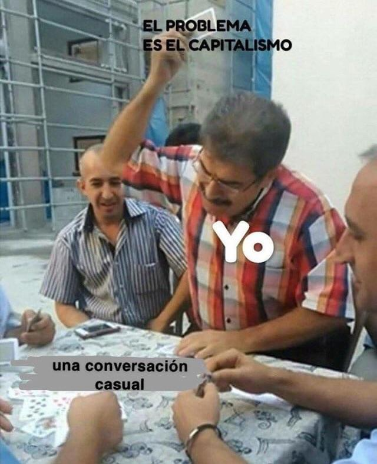

CBT can help you understand what you are going through
Therapy for Adults
"If you're feeling anxious, stuck, or overwhelmed,
I provide a calm, supportive space where we can work together
to ease your mind and move forward."

Personalised assessment

Practical strategies
Meaningful change
Hi, I’m Ana.
As the founder of APT, I work exclusively with adults, supporting you to better understand yourself, work through what’s been weighing you down, and find a more peaceful and empowered way forward.
I work with a range of difficulties, including anxiety, low mood, stress, and the impact of difficult or traumatic experiences. I have a particular interest in trauma and in understanding how experiences from the past can continue to affect how we feel, think, relate to others, and experience our bodies in the present.
Together, we’ll gently explore what’s affecting you today and make sense of what you’re experiencing, at a pace that feels manageable for you. Using evidence-based Cognitive Behavioural Therapy (CBT), we’ll focus on what matters most to you and work towards meaningful and lasting change. Along the way, you’ll learn practical strategies and techniques that you can take beyond our sessions and use in everyday life.
My goal is for you to leave therapy feeling more confident, grounded and better able to navigate life’s challenges - with a deeper understanding of yourself and the skills to cope, make changes and move forward.
You don’t have to figure it all out alone. We can take the first step together.
A calmer mind. A stronger You.
Reach out today and let’s begin.
